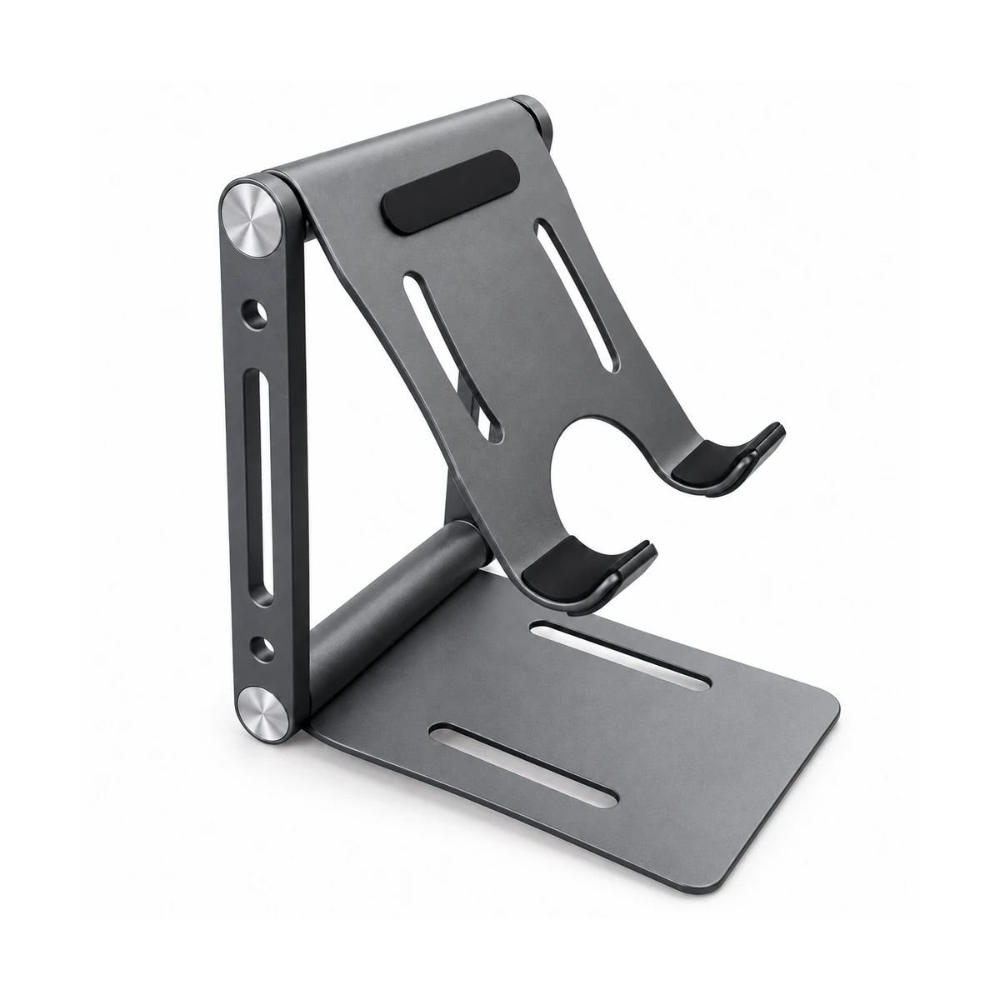
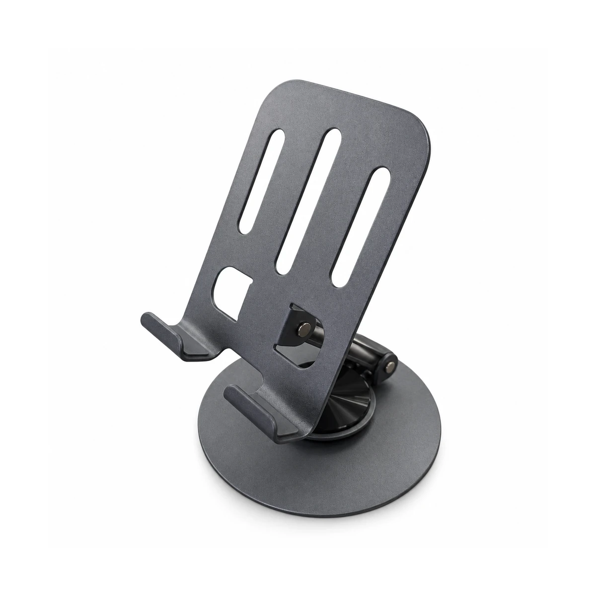
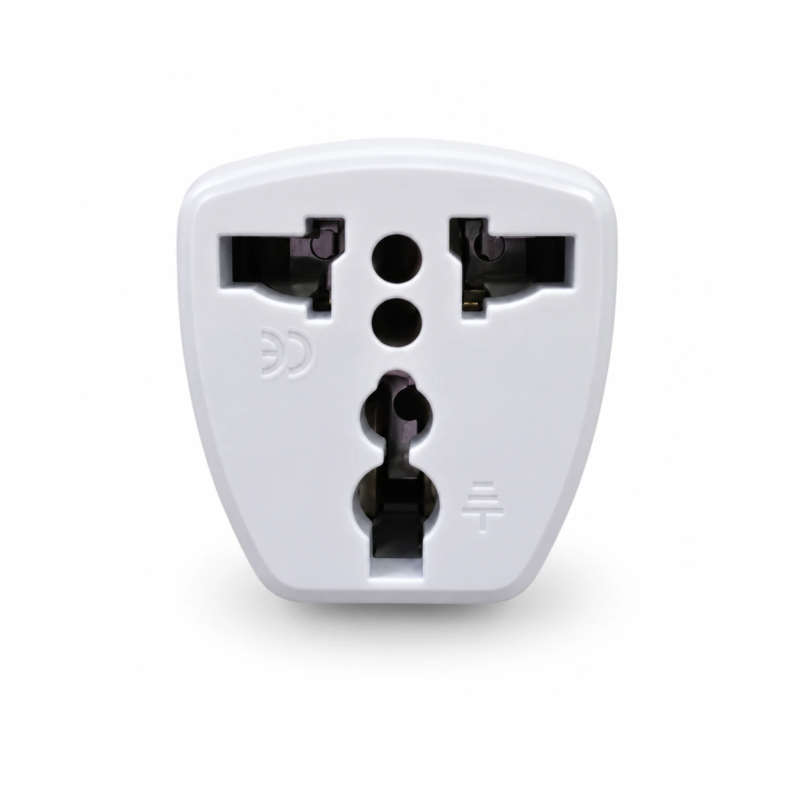
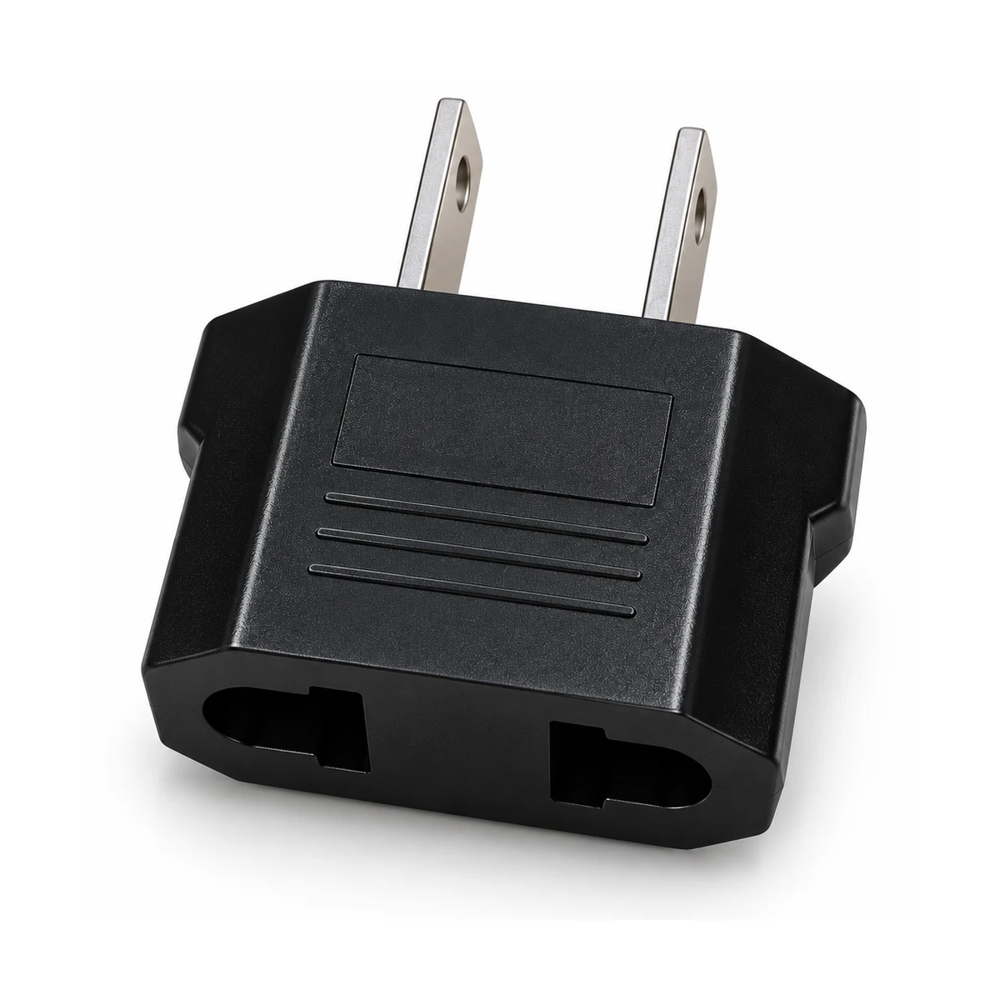

SOPO060Soporte de escritorio plegable T8-02 para celular y tablet
Retirada localizada del nombre y logotipo YAN TECH de la base por orden expresa del propietario. Cotejo visual: geometría, ranuras, orificios, dos pivotes, almohadilla y apoyos conservados.

SOPO023Soporte plegable T8-04 para celular con base giratoria
Retirada de la impresión YAN TECH tras la bisagra de la base; acabado de estudio desde fotografía pública y fuente propia. Tres ranuras, dos ventanas, dos apoyos, articulación y base circular conservados. No se reutilizó el maestro pendiente de premium-001.

ADAP004Adaptador de enchufe Europa a Latino blanco
Edición comercial asistida por IA a partir de las dos fotografías propias: misma silueta blanca, aberturas universales y posición de relieves observados. No se atribuyen certificaciones ni capacidad eléctrica. Revisión comparativa de aberturas y variante. No representa recuperación óptica de detalles.

ADAP005Adaptador de enchufe Europa a Latino negro
Edición comercial asistida por IA con las dos fotos propias: carcasa negra con hombros biselados, dos clavijas planas, ranuras de agarre y dos entradas delanteras conservadas. No se atribuyen valores eléctricos ni certificaciones; sello moldeado permanece discreto. No representa recuperación óptica de detalles.